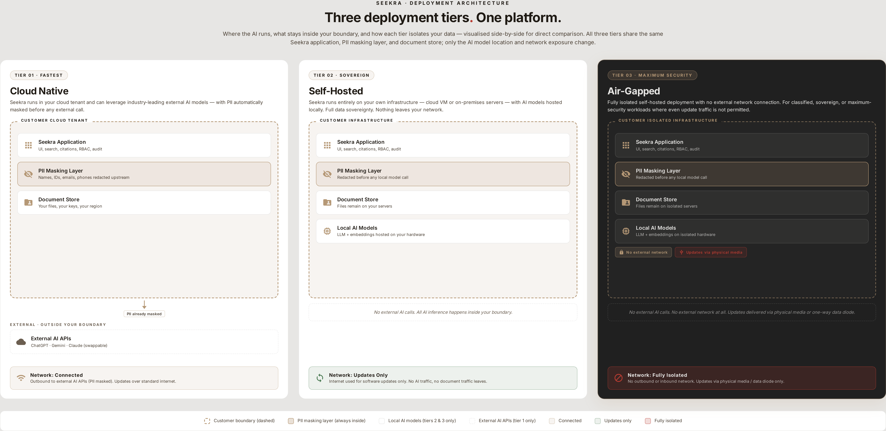

Appendix · Deployment Architecture
Reference
Three deployment tiers visualised side-by-side. The same Seekra application, PII masking layer, and document store run in all three tiers — only the AI model location and network exposure change.
